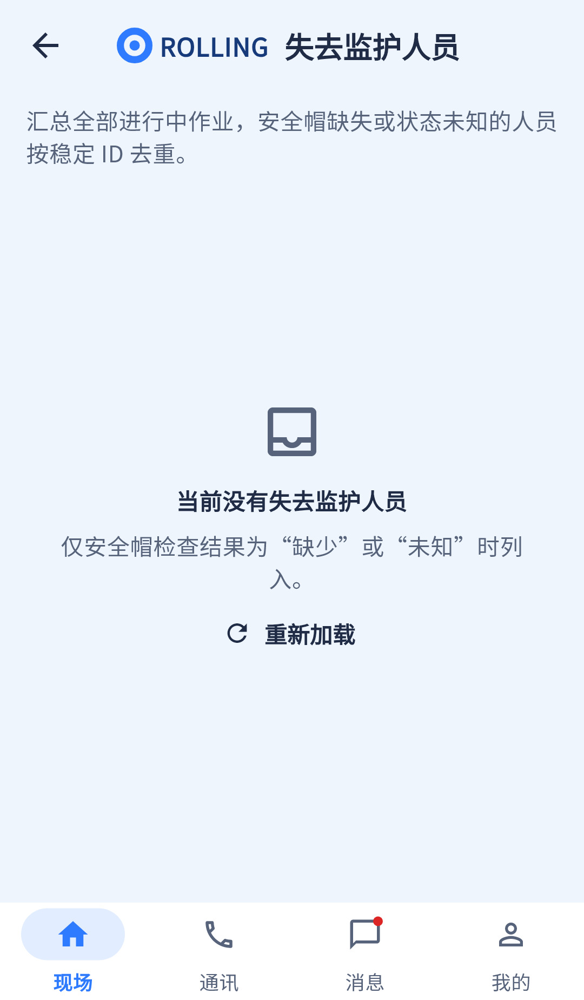

不应把空截图判为整页缺失；需补非空样例和三个小功能。
相同 · 已有基础
已有跨进行中作业聚合、稳定人员ID去重、缺少/未知监护原因。
不同 · UI与场景
当前截图是零结果空态；非空源码是人员+所属任务列表，缺设计原因筛选、人员详情与直接联系按钮。
01 / 先看 UI
两图显示宽度统一；设计390px与当前360逻辑宽的画布不同。各图可独立滚动到底，点击“原图”放大。


使用既有组件截图；业务数据为示例。
02 / 逐项核对功能与小交互
入口：现场 → 失去监护人员 · 当前形态：子页面
| 编号 | 部位 | 设计要求 | 当前UI | 功能结论 | 下一步 |
|---|---|---|---|---|---|
| 09-01 | 说明 | 缺帽/未知需人工核查，不直接违规 | 当前顶部写聚合口径，空态说明原因 | 部分：独立黄色提醒卡缺失 | 补非违规说明并统一标题 |
| 09-02 | 原因筛选 | 全部原因/缺少帽/状态未知 | 当前无筛选控件 | 缺失：聚合结果未按原因可选过滤 | 在去重后按原因筛选，保留一人多个原因 |
| 09-03 | 聚合范围 | 跨作业按人员去重 | 当前读取全部进行中任务及装备检查 | 已有代码：批量查询并稳定ID聚合 | 保留，验证跨分页、多作业同一人 |
| 09-04 | 人员摘要 | 姓名、编号、班组、原因徽标 | 当前姓名+内部人员ID+任务数 | 部分：编号、班组、原因徽标需补 | 使用业务编号，不把数据库ID作为主要信息 |
| 09-05 | 设备情况 | 设备SN及上报过期 | 当前原因描述为缺少或未知 | 部分：未完整显示设备和上报时间 | 补证据时间，未知不宣称离线 |
| 09-06 | 查看人员 | 图中查看人员按钮 | 当前可点所属任务，不能直接点人 | 缺失：人员详情入口 | 新增people/:id，保留原任务跳转 |
| 09-07 | 联系人员 | 图中直接联系按钮 | 当前无 | 缺失：从此处直接联系 | 接通讯personId并保留能力判断 |
| 09-08 | 空态 | 没有失去监护人员 | 当前已有原组件空态和重试 | 已有代码：本次预览数据零结果 | 补非空截图验收，不伪造生产异常 |
源码依据
queries/supervision.dart:35,106,132；queries/query_utils.dart:aggregateLostSupervision
链接为随报告保存的带行号快照；行号对应分析时源码。以函数和字段共同定位，不能将请求代码视为执行成功证据。